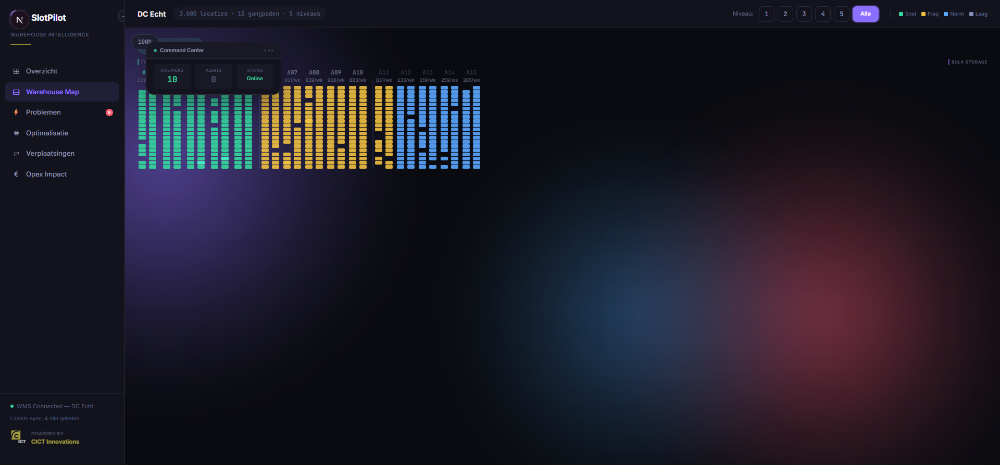
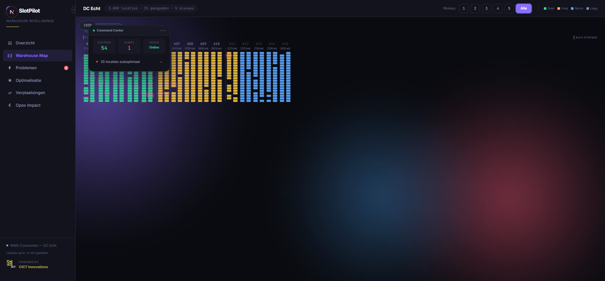
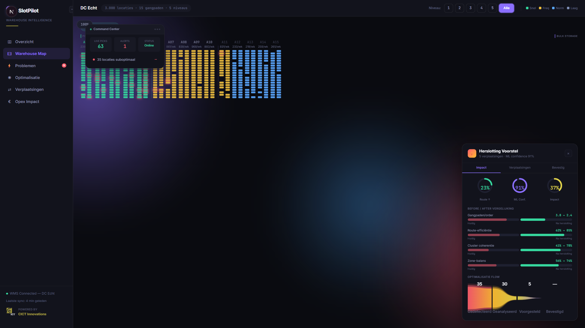
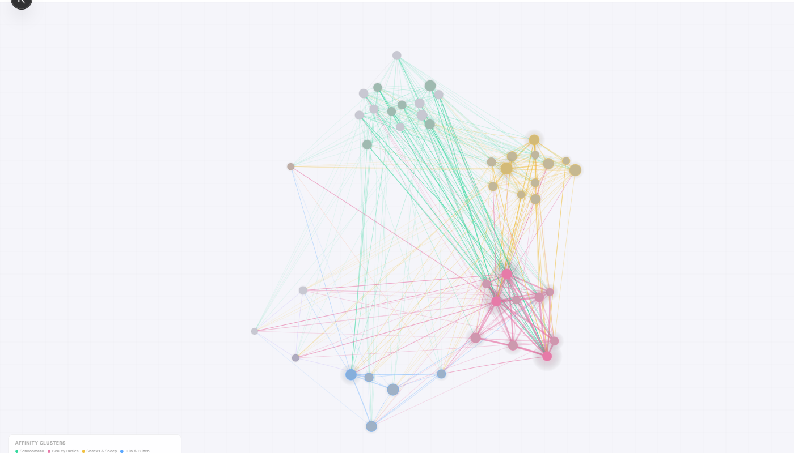

ISM analyseert waar elk product staat — en waar het zou moeten staan. Continu, autonoom, en meetbaar.
De meeste magazijnen slotten op ervaring en gewoonte. Niet op data. Het resultaat: pickers die structureel meer lopen dan nodig.
Niet een keer per kwartaal. Niet op basis van onderbuikgevoel. Maar continu, gebaseerd op wat er werkelijk gepickt wordt.
ISM combineert twee bewezen wetenschappelijke disciplines.
Voorspelt welke producten samen gepickt worden, hoe de vraag verschuift, en welke artikelen sneller of langzamer gaan lopen.
Berekent de optimale plaatsing per product, de efficiëntste pickroute, en de beste verdeling over zones.
Elke suggestie is traceerbaar. Geen black box.
ISM is middleware — het zit tussen het WMS en de werkvloer. Geen vervanging, een versterking.
De warehouse map toont elke locatie, elke SKU, elke pickfrequentie. Interactief en real-time.

ISM volgt elke pick en detecteert automatisch wanneer de huidige slotting niet meer optimaal is.

Wanneer het systeem een verbetering ziet, toont het exact welke producten waar naartoe moeten — en waarom.

Een levende grafiek van productrelaties — gebouwd op echte orderdata, niet op aannames.

Co-occurrence clusters, affiniteitsanalyse, en velocity classificatie — visueel gemaakt.
Wij doen geen beloftes op basis van simulatiedata. De echte impact meten we op jullie warehouse, met jullie orders, met jullie producten.
Jullie data bepaalt het resultaat — niet onze demo
Elke parameter is instelbaar op jullie situatie
Transparante methodiek — jullie zien exact hoe de berekening werkt
Per locatie configureerbaar, centraal bestuurbaar. Van pilot op één DC tot uitrol over de hele organisatie.
Eigen layout, eigen ML-modellen per warehouse
Uniforme rapportage en benchmarking
Standaard data-import, geen IT-project
Wij bouwen software die operationele complexiteit vertaalt naar meetbare resultaten.
Geen platforms die alleen demo's overleven. Platforms die productie overleven.
Een pilot op één warehouse. Jullie data, jullie producten, jullie resultaat.
Geen commitment. Wel inzicht.